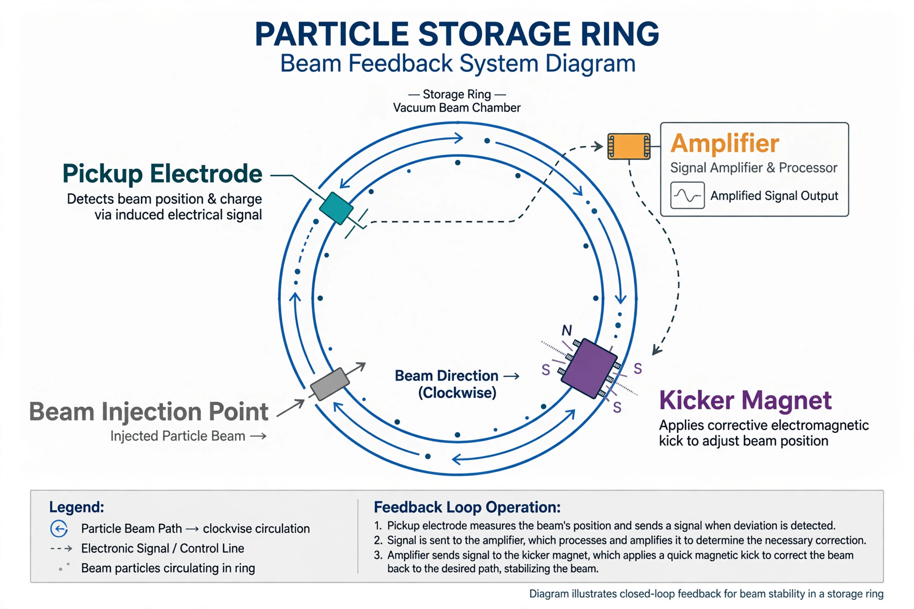

From Wikipedia, the free encyclopedia
| Stochastic cooling | |
|---|---|
 | |
| Field | Accelerator physics |
| Inventor | Simon van der Meer |
| First proposed | 1968 (published 1972) |
| Used at | CERN, Fermilab |
Stochastic cooling is a technique for reducing the momentum spread and size — "cooling" — of a beam of charged particles circulating in a storage ring, without violating Liouville's theorem the way simple dissipative methods cannot. It was invented by the Dutch engineer-physicist Simon van der Meer at CERN and proved essential to the accumulation of antiprotons for the SPS proton–antiproton collider, which discovered the W and Z bosons in 1983. Van der Meer shared the 1984 Nobel Prize in Physics with Carlo Rubbia.
A sensitive pickup electrode measures the average deviation of a small sample ("bunchlet") of the beam from the ideal orbit. That signal is amplified and applied at a kicker downstream, timed so the same sample receives a corrective kick. Each pass corrects only statistical fluctuations — hence "stochastic" — but repeated over millions of turns the random errors average away and the beam's phase-space volume shrinks. Bandwidth is crucial: the wider the system bandwidth, the smaller the samples and the faster the cooling.
Stochastic cooling made dense antiproton beams possible at CERN's Antiproton Accumulator and at Fermilab's Accumulator ring, feeding the Tevatron collider. Variants such as optical stochastic cooling have been proposed to reach much higher bandwidths. Related beam-cooling methods include electron cooling and laser cooling of stored ion beams.